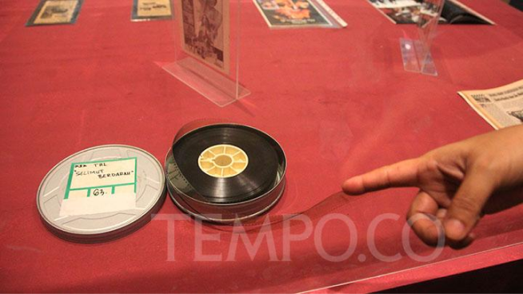

Upaya Disparbud Lestarikan Kekayaan Budaya Pangandaran
Dinas Pariwisata dan Kebudayaan (Disparbud) Kabupaten Pangandaran membentuk Dewan Kebudayaan (Dekbud) dengan tujuan mempertahankan dan memajukan budaya daerah.

Belanda kembali pulangkan ratusan objek budaya Nusantara ke Indonesia
Gudeg Jogja terkenal dengan rasanya yang manis dan terbuat dari nangka muda yang diolah dengan santan.

Belanda Kembalikan 288 Benda Cagar Budaya Indonesia
Indonesia dan Belanda menandatangani kesepakatan repatriasi atau pengembalian sebanyak 288 benda cagar budaya asal Indonesia, di Wereldmuseum, Amsterdam, pada 20 September 2024, pukul 15:00 CET.